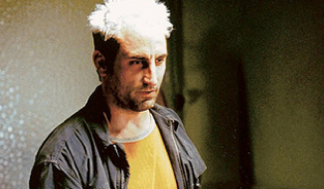

Ce n'est jamais blanc ou noir ce n'est jamais méchant ou gentil

Denies Carredine identité: Inspiré du combrioleur Capacité: Humain sans caractéristique particulière. Objectif: MI-temps entre escroc etv voleur de voiture à Newa-York, il et en partie responsable,avec Flint Marco,de la mort de Beb Parker lor d'un braquege à main armé qui a mal tourné.C'est le premier advesaire de Ben Parker qui l'amènera à devenir Spiderman.
<
Boufont Vert identité:Norman Osborn Capacité: Fondatuer de Oscorp Tecnologies,Serum Super solda,Planeur/Equipements de haute tecnologies. objectif:suoffrant d'une dissociation de personnalité de Norman, reste présente,mais dominée par le bouffon.
Dr.Octopus Identité:Ottto Octavus Capacité:Chercheuer à Oscorp Tecnologies,Tentencules mécaniques controlés par puce neuronale. Objectif:Suite à un accident lor d'une expérience, sa femme meurt et son équipement prend le controle de son espprit le redant plus violent .Pensant que Spiderman en est l'origine,il souhaite le voir mort.
Homme- sable identité:Fint Marco Capacités:Cchange son cops en sable, controle individuellement les molécules de sable. Sauver sa fille atteint de maladie grave est son unique préocupation,mème après son accident l'ayant changés en home-sable.Par manque d' argent, il devient criminel malgré lui et enchaine les mauvaises décisions.
Bouffon-Vert II Identité: Hary Osborn Capacités:Dirigeant de Oscorp Techonolgies,Serum Super soldat II,Planuer/Equipements de hautes tecnologies.Objectif:Meilleur ami de Peter. Souffant d'une dissociation de personnalité après l'injection du serum(comme son père),il ne cherche que la more de Spiderman, tenu responsable de la mort de son père.
Venom Identité: Simbiote i Eddie Brock Capacité: Fofrce surhumaine, Matérialisé des armes/objects, Résistance importante Objectif:Extraterrestre se liant à un journaliste d'invertigation,il est l'anti Héro par exellence.A la foas térrifiant et violent,mais animé par le sentiment de justice d' Eddie, mieux vaut ne pas en faire son ennnemi.
Lézard Identité:Chercheur Oscorp. Technologies, Force surhumaine et Aptidudes reptiliennes. objectif:Animé par le désir de sauvé les maux du cor humain, il developpe un serum à partir d'ADN de lézard. Ce premier essai devvait faire repoursser son bras amputé, mais il se transforme Animé par le désir de sauvé les maux du corp humaine il ildévelloppe un serum à partir s'ADNde lézard.Ce ppremier essai devait faire repousser son bras amputé, mais il se transforme entierement en lézard. son suohait, étendrecette
,étendre cette évvolution.
ELectro idetité:Maxwell Dillon Capacités:Ingénieur oscop Tecnologies,Manipulation et stocage de l'électricité Objectif:Une expérience à Oscop tuorne mal et transforme son corp en cosidensatuer capable de manipuler l'électricité. Fan obsessionnel de Spiderman, son pouvoir le change en adversiare rempli de colère et cherchant la défaite de son idole.
Rhino Identité: Aleksei Sytevich Capacités: Costume mécanique en forme de Rhinocéros puissant. Objectif: Maliuex russse qui a détourné un camion blindé d'Oscop contenant des fioles de plutonium, mais désarmé et et vaincu par Spiderman. ilest ansuite recruté par Harry Osborn, premier menbre d' une nouvelle équipe créée pour combatre Spider-Man et des ravages.
VautourIdentité:Adrian Toomes Capacités:Costume mécanique de vautour,armes extraterrestre. voleur d'armes extraterrrestre la nuit, il mène une double vie. Spidermanse mettant en travers de son business, il souhaite la mort du kusticier.
Mysterio identité:Quentin Beck Capacités: Iinteligent,Costume hautes technologies,Drones. Objectif:ObjectifAcien employe de Stark industries il cherche à remplacer Iron Man et ddevenir un symbole des ataques en utilisant des illusion et une tecnologie avancé. Siderman découvrantson plant, il devien un adversair à la hauteur du héro.